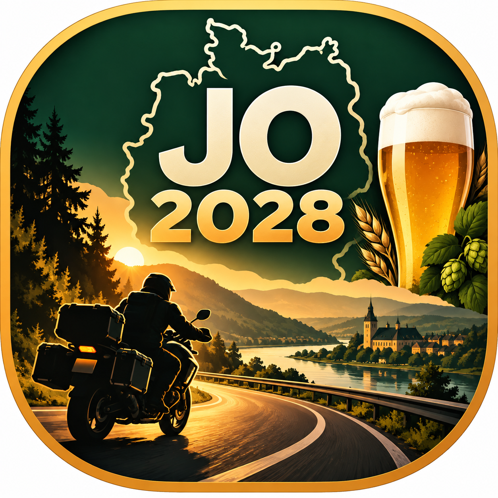

Jedes Reiseprojekt erhält seine eigene Kachel. Innerhalb eines Projekts können beliebig viele Präsentationsfassungen liegen – zum Beispiel Grobplanung, Kurviger-Fassung, finale Reiseführer-Version oder eine spätere Nachbereitung.
Alle Leitpunkte der aktuellen GPX. Die Karte ist zoombar und auf dem iPad per Touch verschiebbar.